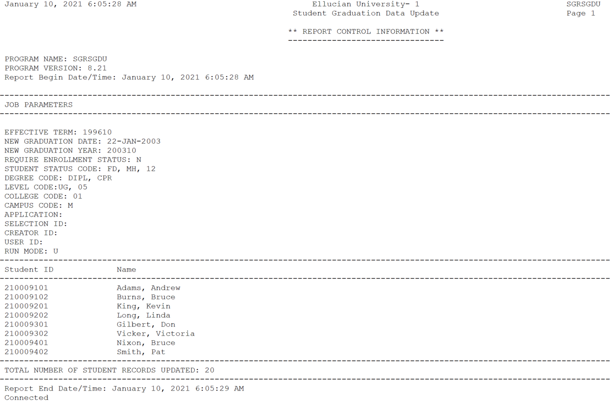

General Student
Advisors Assignment Process (SGPADVA)
Use the Advisors Assignment Process (SGPADVA) to assign, replace, end or delete advisors to a student, or a group of students on the Multiple Advisors (SGAADVR) page.
The process performs the following functions:
- Filters the list of students to be assigned, replaced, ended or deleted with advisors based on the population selection parameters or other parameters like Program, Degree, Level, Cohort and so on.
- Assigns the advisors to a student based on the matching active rules defined on the Advisors Assignment Rules (SGAAVRL) page for a specific term.
- Inserts the advisors as a primary or non-primary advisors to the students for a specific term.
- Replaces the existing advisor for a student with a new advisor and advisor type using the job parameters values for a population of students.
- Ability to End all advisors or a specific advisor for a student to a specific term.
- Ability to Delete all advisors or a specific advisor for a student to a specific term.
- Ability to End or Delete all or a specific advisor for a student based on Advisor Type.
- Ability to Copy or End the existing advisor assignments from the effective term.
When the Job process is run, the advisor selected for each of the matched active rules from the SGAAVRL rules page will be inserted into the Multiple Advisors (SGAADVR) page for the Update Term parameter specified on the job parameter.
- You can run the process either with the parameters from 7 to 18 or with the population selection parameters.
- You can leave the parameters from 7 to 18 blank only if the population selection parameters are defined.
- If both population selection parameters and other parameters like Program, Degree, Level, Cohort, and so on are defined, when the job process is run, then the population selection parameters take precedence and the list of students to be assigned or replaced with advisors are filtered based on the population selection.
| Parameter Name | Required? | Description | Values |
|---|---|---|---|
| Effective Term | Yes | Enter the term code used to fetch list of students whose curriculum records falls within this term or immediate previous max term. | Term Code Validation Form (STVTERM) |
| Update Term | Yes | Enter the term code for which advisors are assigned, replaced, ended or deleted on the Multiple Advisors (SGAADVR) page. | Term Code Validation Form (STVTERM) |
| Action | Yes | Select:
|
|
| Advisor ID | No | Enter the new Advisor ID that will replace for student on the Multiple Advisors (SGAADVR) page. This field is required only if the Action parameter is set to R. | Faculty/Advisor Filter (SIAIQRY) |
| Advisor Type | No | Enter the Advisor Type Code for an Advisor. Used when the action parameter is:
|
Advisor Type Validation (STVADVR) |
| Existing Advisor ID | No | Existing Advisor ID used to
|
Faculty/Advisor Filter (SIAIQRY) |
| Program | No | Enter the program code of the curriculum. | Program Definitions Rules (SMAPRLE) |
| Level | No | Enter the student level code of the curriculum. | Level Code Validation (STVLEVL) |
| College | No | Enter the college code of the curriculum. | College Code Validation (STVCOLL) |
| Campus | No | Enter the campus code of the curriculum. | Campus Code Validation (STVCAMP |
| Degree | No | Enter the degree code of the curriculum. | Degree Code Validation (STVDEGC) |
| Class | No | Enter the class code of the primary curriculum. | Class Code Validation (STVCLAS) |
| Cohort | No | Enter the cohort code of the student. | Cohort Code Validation (STVCHRT) |
| Student Attribute | No | Enter the student attribute. | Student Attribute Validation (STVATTS) |
| Sport | No | Enter the Sport Code defined for the student on the Athletic Compliance (SGASPRT) page. | Banner Student Activity Code Validation (STVACTC) |
| Field of Study Type | No | Enter the field of study type for the curriculum. | Learner Field of Study Type Validation (GTVLFST) |
| Field of Study Code | No | Enter the field of study code for the curriculum. | Major, Minor, Concentration Validation Table (STVMAJR) |
| Department | No | Enter the department code linked to a field of study code. | Department Code Validation (STVDEPT) |
| Run Mode | Yes |
|
|
| Application | No | Enter the code that identifies the general area for which the selection identifier was defined. All or none of the population selection parameters must be entered. The Population Selection Extract Inquiry Form (GLIEXTR) can be used to review the people who will be processed in the load from the selection identifier and application code entered. |
Application Inquiry Form (GLIAPPL) |
| Selection ID | No | Enter the code that identifies the population with which you want to work. The selection identifier must be defined on the Population Selection Definition Rules Form (GLRSLCT). All or none of the population selection parameters must be entered. | Population Selection Inquiry Form (GLISLCT) |
| Creator ID | No | Enter the user ID of the person who created the population rules. All or none of the population selection parameters must be entered. | |
| User ID | No | Enter the user ID for the population selection. This is the ID of the user who selected the population of people. This may or may not be the same as the Creator ID. All or none of the population selection parameters must be entered. | |
| Manage Existing Advisors | No | Enter
The values are required if the Parameter 03 = (A)ssign. |
|
Job process logic for Action parameter
The logical process of the job when the Action parameter is Assign, Replace, End or Delete.
Job process logic when the Action parameter is Assign
- If multiple rules match for a student, then all the advisors from all the matched rules must be assigned to the students for the term defined on the Update Term parameter.
- If a primary advisor is available for a student for the term defined on the Update Term parameter, then insert the advisors as a non-primary advisor to the students for the term defined on the Update Term parameter.
- If there are no advisors assigned for a student for the term defined on the Update Term parameter, then the matched least rule number's primary advisor is assigned as the primary advisor to a student, and the rest of the matched rules advisors are assigned as non-primary advisors.
- In this case the student curriculum records matches with Rule 1 and Rule 2.
- Considering the Rule Number, the Rule 1 is prioritized and Kelly Leahey (G00376009), is assigned as the primary advisor to the student for the term = 202310 on the Multiple Advisor (SGAADVR) page.
- Considering the Rule Number, Robert Frost (G00578242) is defined as primary advisor for the Rule 2; however, as there can be only one primary advisor for a term, the advisor Robert Frost (G00578242) will be assigned as a non-primary advisor to the student for the term = 202310.
| Active | Rule Number | Term Code | Program | Level | Advisor ID | Advisor Name | Advisor Type | Primary Advisor |
|---|---|---|---|---|---|---|---|---|
| Y | 1 | 202310 | UG | G00376009 | Kelly Leahey | DEAN | Y | |
| Y | 1 | 202310 | UG | G00365056 | Jonathan Henry | PRDR | N | |
| Y | 2 | 202310 | BA-MATH | G00578242 | Robert Frost | PRDR | Y | |
| Y | 2 | 202310 | BA-MATH | G00855200 | David Bell | PRDR | N |
If a rule is set just by passing the Starting Last Name as A and NO Ending Last Name, you can assign the advisor for the student whose last name starts with A till Z. If a rule is set just by passing the Ending Last Name as M, you can assign the advisor for the student whose last name starts with A till M.
If a rule is set by passing Starting Last Name as A and Ending Last Name as M, you can assign the advisor for the student whose last name starts with A till M.
- The Starting Last Name and Ending Last Name defined on SGAAVRL page for a rule is considered as a range of alphabets when evaluated in job process. For example:
Table 1. List of Students ID Last Name First Name A0001 Aalder John A0002 Adison Sam A0003 Brooks Dan A0004 Md. Hassan Ben A0005 Morgan Steve Table 2. SGAAVRL Rules Active Rule Number Effective Term Starting Last Name Ending Last Name SGPADVA Expected result Y 1 202410 AB MD A0002, A0003, A0004 Y 2 202410 AB A0002, A0003, A0004, A0005 Y 3 202410 MD A0001,A0002, A0003, A0004 Y 4 202410 A M A0001, A0002, A0003 - In the SGAAVRL Rules table, the Rule Number 1 has a range from AB to MD and therefore all the students with Last Name beginning from AB till MD must be considered to assign an advisor. The Student ID A0001 whose Last Name begins with AA will not be considered for this rule.
- The Rule Number 2 has a range from AB, and there is no Ending Last Name, therefore all the students whose Last Name begins from AB and above till ZZ must be considered to assign an advisor. The Student ID A0001 whose Last Name begins from AA will not be considered for this rule.
- The Rule Number 3 has a range defined for Ending Last Name = MD, and there is no Starting Last Name defined, therefore all the students whose Last Name ends till MD and below, that is. AA must be considered to assign an advisor. The Student ID A0005 whose Last Name begins from Mo will not be considered for this rule.
- The Rule Number 4 has a range from A to M and therefore all the students with Last Name beginning from A till M should be considered to assign an advisor. Note that even though the Student ID's A0004 and A0005 whose Last Name begins with M those students will not be considered for this rule because the Ending Last Name is set with single character M for the rule but the Student IDs A0004 and A0005 has Last Name with more than one characters and therefore treated as greater than Ending Last Name = M. If you want to consider the Student IDs A0004 and A0005 within this rule then its recommended to set the rule as Starting Last Name = A and Ending Last Name = MZ.
Job process logic when the Action parameter is Replace
Select the Action parameter as R-Replace, to replace an existing advisor for a student. The students list is filtered based on the population selection parameters or other parameters like Program, Degree, Level, Cohort and so on, provided when the job is run. The students Active and Current curriculum records are filtered for the term defined in the Effective Term parameter.
- If there is an existing advisor, the advisor is replaced with the advisor from the Advisor ID parameter, and the advisor type is replaced with the advisor type in the Advisor Type parameter for the student.
- If there are no existing advisors, the replacement is not processed for the student.
- If the existing advisor is primary advisor, then the Advisor ID and Advisor Type defined on the Advisor ID parameter and Advisor Type parameter will be added as primary advisor for a student.
- If the existing advisor is non-primary advisor, then the Advisor ID and Advisor Type defined on Advisor ID parameter and Advisor Type parameter will be added as non-primary advisor for a student.
- When the process is run with the Action parameter as R-Repalce the job process will NOT check for active rules defined on the Advisors Assignment Rules (SGAAVRL) page for a specific term. The replace of advisors to a student would be dependent only on the values defined on Advisor ID, Advisor Type and Existing Advisor ID parameters.
- If the advisor defined on Existing Advisor ID parameter has multiple records for student with different "Advisor Type" on SGAADVR page then all the records for the advisor will be replaced with the advisors defined on Advisor ID parameter and Advisor Type parameter.
Job process logic when the Action parameter is End
- If the Existing Advisor ID parameter is left blank when Action = E, then it is considered as end all advisors for a term.
- If the Existing Advisor ID parameter is not blank when Action = E, then it is considered as end specific advisor for a term.
The Update Term parameter identifies the term for which you want to end the advisors. The SGPADVA process picks the list of students based on the population selection.
Example scenario to end all advisors
- Effective Term = 202410
- Update Term = 202420
- Action = E
- Existing Advisor ID = NULL
Existing data on the SGAADVR page:
| Advisor | From Term | End Term | Primary |
|---|---|---|---|
| ADV01 | 202410 | 999999 | |
| ADV02 | 202410 | 999999 | Y |
| ADV03 | 202410 | 999999 |
SGAADVR page after ending all advisors:
| Advisor | From Term | End Term | Primary | Comments |
|---|---|---|---|---|
| ADV01 | 202410 | 202420 | ||
| ADV02 | 202410 | 202420 | Y | |
| ADV03 | 202410 | 202420 | ||
| NULL | 202420 | 99999 | This record will not be visible on the page. |
Example scenario to end single advisor:
- Effective Term = 202410
- Update Term = 202420
- Action = E
- Existing Advisor ID = ADV03
Existing data on the SGAADVR page:
| Advisor | From Term | End Term | Primary |
|---|---|---|---|
| ADV01 | 202410 | 999999 | |
| ADV01 | 202410 | 999999 | Y |
| ADV01 | 202410 | 999999 |
SGAADVR page after ending single advisor:
| Advisor | From Term | End Term | Primary |
|---|---|---|---|
| ADV01 | 202410 | 202420 | |
| ADV02 | 202410 | 202420 | Y |
| ADV03 | 202410 | 202420 | |
| ADV01 | 202410 | 999999 | |
| ADV02 | 202410 | 999999 | Y |
Job process logic when the Action parameter is Delete
- If the Existing Advisor ID parameter is left blank when Action = D, then it considered as delete all advisors for a term.
- If the Existing Advisor ID parameter is not blank when Action = E, then it considered as delete specific advisor for a term.
The Update Term parameter identifies the term for which you want to delete the advisors. The SGPADVA process picks the list of students based on the population selection.
Job process logic for Advisor Type parameter
You can delete or end a single advisor or all advisors for a specific advisor type.
Job process logic to delete All advisors for a specific Advisor Type
- If the Existing Advisor ID is left blank and Advisor Type is not blank when the Action = D, then it is considered as Delete all Advisors specific to a Advisor Type for a term.
- The existing Update Term parameter identifies to which term the advisors should be deleted.
To delete advisors for a specific Advisor Type, run the job process with Action = D, Update Term = 202420, Existing Advisor ID = Blank and Advisor Type = Not Blank, then:
- The process checks if the Advisor Type defined in the job process parameter exists for the exact Update Term on the SGAADVR page for a student.
- If it is not defined, an error message displays in .lis file against the student record.
- If it is defined, then:
- The process checks if the Advisor with the specific Advisor Type is a Primary Advisor and the only advisor assigned for the student.
If yes, then delete the advisor on the exact term as Update Term for the student.
- The process checks if the Advisor with the specific Advisor Type is a Primary Advisor and not the only advisor assigned for the student for the Update Term.
If yes, then an error message displays in .lis file against the student record.
- If the Advisor with the specific Advisor Type defined is not a Primary Advisor then, delete the advisor on the exact term as Update Term for the student.
- The process checks if the Advisor with the specific Advisor Type is a Primary Advisor and the only advisor assigned for the student.
Job process logic to delete a single advisor for a specific Advisor Type
- If the Existing Advisor ID and Advisor Type is not blank when the Action = D, then it is considered as Delete a specific Advisor specific to a Advisor Type for a term.
- The existing Update Term parameter identifies to which term the advisors should be deleted.
To delete advisors for a specific Advisor Type, run the job process with Action = D, Update Term = 202420, Existing Advisor ID = Not Blank and Advisor Type = Not Blank, then:
- The process checks if the specific Existing Advisor ID and Advisor Type defined in the job process parameter exists for the exact Update Term on the SGAADVR page for a student.
- If it is not defined, an error message displays in the .lis file against the student record.
- If it is defined, then:
- Process checks if the specific Existing Advisor ID and the specific Advisor Type defined in job process parameter is a Primary Advisor and the only advisor assigned for the student for the Update Term.
If yes, then delete the advisor on the exact term as Update Term for the student.
- Next, process checks if the specific Existing Advisor ID and the specific Advisor Type defined in job process parameter is a Primary Advisor and not the only advisor assigned for the student for the Update Term.
If yes, then an error message displays in the .lis file against the student record.
- If the specific Existing Advisor ID and the specific Advisor Type defined in job process parameter is not a Primary Advisor then, delete the advisor on the exact term as Update Term for the student.
- Process checks if the specific Existing Advisor ID and the specific Advisor Type defined in job process parameter is a Primary Advisor and the only advisor assigned for the student for the Update Term.
Job process logic to end all advisors for a specific Advisor Type
- If the Existing Advisor ID is blank and Advisor Type is not blank when the Action = E, then it is considered as End Advisors specific to a Advisor Type for a term.
- The existing Update Term parameter identifies to which term the advisors should be ended.
To end advisors for a specific Advisor Type, run the job process with Action = E, Update Term = 202420, Existing Advisor ID = Blank and Advisor Type = Not Blank, then:
- The process checks if the Advisor Type defined in the job parameter exists for the immediate previous max term of Update Term on the SGAADVR page.
- If it is not defined, an error message displays in the .lis file against the student record.
- If it is defined, then:
- The process checks if the Advisor defined in the job parameter is a Primary Advisor and the only advisor for the student.
- If it is defined, then:
- End the advisor for the immediate previous max term record to the term defined on Update Term, that is, on SGAADVR the End Term for the immediate previous max term should be equal to Update Term value.
- Create a new row on the SGRADVR table for the Update Term with a NULL Advisor ID and Advisor Type.
- If it is not defined, then an error message displays in the .lis file against the student record.
- If it is defined, then:
- If none of the advisors is a Primary Advisor with the Advisor Type defined in the job parameter then:
- End the advisors with the Advisor Type defined in the job parameter for the immediate previous max term record to the term defined on Update Term, that is, on the SGAADVR the End Term for the immediate previous max term should be equal to Update Term value.
- Create a new record for the Term = Update Term and insert the remaining advisors.
- If same advisor has multiple records with different Advisor Type and one record is Primary and the other is Non-primary, and is the only advisor for the student then:
- The process checks if the the advisor record with Advisor Type defined in the job parameter is a Primary advisor.
- If it is defined, then an error message displays in the .lis file against the student record.
- If it is not defined, then:
- End the advisor record with the Advisor Type defined in the job parameter for the immediate previous max term record to the term defined on Update Term, that is, on the SGAADVR the End Term for the immediate previous max term should be equal to Update Term value.
- Create a new record for the Term = Update Term and insert the remaining advisor record.
- The process checks if the the advisor record with Advisor Type defined in the job parameter is a Primary advisor.
- The process checks if the Advisor defined in the job parameter is a Primary Advisor and the only advisor for the student.
Job process logic to end a single advisor for a specific Advisor Type
- If the Existing Advisor ID and Advisor Type is not blank when the Action = E, then it is considered as End a specific Advisor ID with a specific Advisor Type for a term.
- The existing Update Term parameter identifies to which term the advisors should be ended.
To end a specific Advisor ID for a specific Advisor Type, run the job process with Action = E, Update Term = 202420, Existing Advisor ID = Not Blank and Advisor Type = Not Blank, then:
- The process checks if the specific Existing Advisor ID and Advisor Type defined in job process parameter exists for the exact Update Term on the SGAADVR page.
- If it is not defined, an error message displays in the .lis file against the student record.
- If it is defined, then:
- The process checks if the Existing Advisor ID with the Advisor Type defined in the job parameter is a Primary Advisor and the only advisor for the student.
- If it is defined, then:
- End the advisor for the immediate previous max term record to the term defined on Update Term, that is, on SGAADVR the End Term for the immediate previous max term should be equal to Update Term value.
- Create a new row on the SGRADVR table for the Update Term with a NULL Advisor ID and Advisor Type.
- If it is not defined, then an error message displays in the .lis file against the student record.
- If it is defined, then:
- If the Existing Advisor ID with the Advisor Type defined in the job parameter is not a Primary Advisor then:
- End the Existing Advisor ID with the Advisor Type defined in the job parameter for the immediate previous max term record to the term defined on the Update Term, that is, on the SGAADVR the End Term for the immediate previous max term should be equal to the Update Term value.
- Create a new record for the Term = Update Term and insert the remaining advisors.
- If the Existing Advisor ID has multiple records with different Advisor Type, that is, one record is Primary and the other is Non-primary, and is only advisor for the student then:
- If it is defined, then, an error message displays in the .lis file against the student record.
- If it is not defined, then:
- End the Existing Advisor ID with the Advisor Type defined in the job parameter for the immediate previous max term record to the term defined on Update Term, that is, on the SGAADVR the End Term for the immediate previous max term should be equal to Update Term value.
- Create a new record for the Term = Update Term and insert the remaining advisor record.
- The process checks if the Existing Advisor ID with the Advisor Type defined in the job parameter is a Primary Advisor and the only advisor for the student.
Example Scenarios
Existing Data on the SGAADVR page for a student.
| Advisor | Advisor Type | Primary |
|---|---|---|
| ADV01 | T1 | Y |
| ADV01 | T2 | |
| ADV03 | T2 | |
| ADV04 | T1 | |
| ADV05 | T3 |
- Scenario: Delete/End All Advisors with only Advisor Type = T1
- Result: In the above table Advisor ID's, that is ADV01 and ADV04 has Advisor Type = T1. As Advisor ID = ADV01 is a primary advisor it will not be deleted/ended for the student, and an error message displays in the job process against the student record.
- Scenario: Delete/End All Advisors with only Advisor Type = T2
- Result: In the above table Advisor ID's, that is, ADV01 and ADV03 has Advisor Type = T2 and is not primary advisors. Therefore; the advisor will be deleted/ended for the student.
- Scenario: Delete/End specific Advisor ID with specific Advisor Type, that is, Advisor ID = ADV01 and Advisor Type = T1
- Result: In the above table Advisor ID = ADV01 with Advisor Type T1 exists but is a primary advisor. Therefore; it will not be deleted/ended for the student, and an error message displays in the job process against the student record.
- Scenario: Delete/End specific Advisor ID with specific Advisor Type, that is, Advisor ID = ADV04 and Advisor Type = T1
- Result: In the above table Advisor ID = ADV04 with Advisor Type T1 exists and it is not a primary advisor. Therefore; the advisor will be deleted/ended for the student.
Job process logic for Manage Existing Advisors parameter
When executing the process with Parameter 03 set to Action = A, you have the option to either copy or end the current advisor assignments for the term specified in Parameter 02 - Update Term.
Job process logic if Action = A and Manage Existing Advisors = C
- The Maintenance button must be enabled on the SGAADVR page.
- The job process replicates the features of Copy Advisors within the Maintenance button.
- Copy all the existing Advisors that have an effective term less than the maximum term defined in Parameter 02 - Update Term.
- Add the copied advisors to the term defined in Parameter 02 - Update Term.
- The Primary Advisors from the last term are assigned as primary advisors for the term indicated in Parameter 02 - Update Term.
- The Non-Primary Advisors from the last term are added as non-primary advisors for the term indicated in Parameter 02 - Update Term.
When the advisors are copied, the job process assigns the additional advisors based on the SGAAVRL matched rules, if any exists.
- Example:
- Copy Existing Advisor when Action = (A)ssign.
- Scenario 1:
- Data is not available on the SGAADVR page for the Parameter 02 - Update Term = 202520.
Existing student data on the SGAADVR page.
| Advisor ID | Advisor Type | From Term | To Term | Primary Indicator |
|---|---|---|---|---|
| ADV01 | PRIM | 202510 | 999999 | N |
| ADV02 | MAJR | 202510 | 999999 | Y |
| ADV03 | MINR | 202510 | 999999 | N |
Data setup on the Advisors Assignment Rules (SGAAVRL) page.
| Active | Rule Number | Effective Term Code | Advisor ID | Advisor Name | Advisor Type | Primary Advisor |
|---|---|---|---|---|---|---|
| Y | 1 | 202510 | G00376009 | Kelly Leahey | DEAN | Y |
| Y | 1 | 202510 | G00365056 | Jonathan Henry | PRDR | N |
- Parameter 01: Effective Term = 202510
- Parameter 02: Update Term = 202520
- Parameter 03: Action = A
- Parameter 24: Manage Existing Advisors = C
The table below illustrates the SGAADVR page after applying the Copying Existing Advisor's logic for students associated with Rule Number = 1 on the SGAAVRL page.
| Advisor ID | Advisor Type | From Term | To Term | Primary Indicator |
|---|---|---|---|---|
| ADV01 | PRIM | 202510 | 202520 | N |
| ADV02 | MAJR | 202510 | 202520 | Y |
| ADV03 | MINR | 202510 | 202520 | N |
| ADV01 | PRIM | 202520 | 999999 | N |
| ADV02 | MAJR | 202520 | 999999 | Y |
| ADV03 | MINR | 202520 | 999999 | N |
| G00376009 | DEAN | 202520 | 999999 | N Note: Although designated as the primary advisor on the SGAAVRL page, this advisor is actually classified as a non-primary advisor.
|
| G00365056 | PRDR | 202520 | 999999 | N |
- Scenario 2:
- Data is available on the SGAADVR page for the Parameter 02 - Update Term = 202520.
Existing student data on the SGAADVR page.
| Advisor ID | Advisor Type | From Term | To Term | Primary Indicator |
|---|---|---|---|---|
| G00370000 | PRIM | 202520 | 999999 | N |
| G00370001 | MAJR | 202520 | 999999 | Y |
| G00370002 | MINR | 202520 | 999999 | N |
Data setup on the Advisors Assignment Rules (SGAAVRL) page.
| Active | Rule Number | Effective Term Code | Advisor ID | Advisor Name | Advisor Type | Primary Advisor |
|---|---|---|---|---|---|---|
| Y | 1 | 202510 | G00376009 | Kelly Leahey | DEAN | Y |
| Y | 1 | 202510 | G00365056 | Jonathan Henry | PRDR | N |
- Parameter 01: Effective Term = 202510
- Parameter 02: Update Term = 202520
- Parameter 03: Action = A
- Parameter 24: Manage Existing Advisors = C
The table below illustrates the SGAADVR page after applying the Copy Existing Advisor's logic for students associated with Rule Number = 1 on the SGAAVRL page.
| Advisor ID | Advisor Type | From Term | To Term | Primary Indicator |
|---|---|---|---|---|
| G00370000 | PRIM | 202520 | 999999 | N |
| G00370001 | MAJR | 202520 | 999999 | Y |
| G00370002 | MINR | 202520 | 999999 | N |
| G00376009 | DEAN | 202520 | 999999 | N Note: Although designated as the primary advisor on the SGAAVRL page, this advisor is actually classified as a non-primary advisor.
|
| G00365056 | PRDR | 202520 | 999999 | N |
Job process logic if Action = A and Manage Existing Advisors = E
- The Multiple Advisors (SGAADVR) page must not contain any records for Parameter 02 - Update Term.
- The Maintenance button must be enabled on the SGAADVR page.
- The job process replicates the features of End Advisors within the Maintenance button.
- End all the existing Advisors for the term defined in Parameter 02 - Update Term.
- Example:
- End Existing Advisor when Action = (A)ssign.
- Scenario 1:
- Data is not available on the SGAADVR page for the Parameter 02 - Update Term = 202520.
Existing student data on the SGAADVR page.
| Advisor ID | Advisor Type | From Term | To Term | Primary Indicator |
|---|---|---|---|---|
| ADV01 | PRIM | 202510 | 999999 | N |
| ADV02 | MAJR | 202510 | 999999 | Y |
| ADV03 | MINR | 202510 | 999999 | N |
Data setup on the Advisors Assignment Rules (SGAAVRL) page.
| Active | Rule Number | Effective Term Code | Advisor ID | Advisor Name | Advisor Type | Primary Advisor |
|---|---|---|---|---|---|---|
| Y | 1 | 202510 | G00376009 | Kelly Leahey | DEAN | Y |
| Y | 1 | 202510 | G00365056 | Jonathan Henry | PRDR | N |
- Parameter 01: Effective Term = 202510
- Parameter 02: Update Term = 202520
- Parameter 03: Action = A
- Parameter 24: Manage Existing Advisors = E
The table below illustrates the SGAADVR page after applying the End Existing Advisor's logic for students associated with Rule Number = 1 on the SGAAVRL page.
| Advisor ID | Advisor Type | From Term | To Term | Primary Indicator |
|---|---|---|---|---|
| ADV01 | PRIM | 202510 | 202520 | N |
| ADV02 | MAJR | 202510 | 202520 | Y |
| ADV03 | MINR | 202510 | 202520 | N |
| G00376009 | DEAN | 202520 | 999999 | Y |
| G00365056 | PRDR | 202520 | 999999 | N |
- Scenario 2:
- Data is available on the SGAADVR page for the Parameter 02 - Update Term = 202520.
Existing student data on the SGAADVR page.
| Advisor ID | Advisor Type | From Term | To Term | Primary Indicator |
|---|---|---|---|---|
| G00370000 | PRIM | 202520 | 999999 | N |
| G00370001 | MAJR | 202520 | 999999 | Y |
| G00370002 | MINR | 202520 | 999999 | N |
Data setup on the Advisors Assignment Rules (SGAAVRL) page.
| Active | Rule Number | Effective Term Code | Advisor ID | Advisor Name | Advisor Type | Primary Advisor |
|---|---|---|---|---|---|---|
| Y | 1 | 202510 | G00376009 | Kelly Leahey | DEAN | Y |
| Y | 1 | 202510 | G00365056 | Jonathan Henry | PRDR | N |
- Parameter 01: Effective Term = 202510
- Parameter 02: Update Term = 202520
- Parameter 03: Action = A
- Parameter 24: Manage Existing Advisors = E
The table below illustrates the SGAADVR page after applying the End Existing Advisor's logic for students associated with Rule Number = 1 on the SGAAVRL page.
| Advisor ID | Advisor Type | From Term | To Term | Primary Indicator |
|---|---|---|---|---|
| G00370000 | PRIM | 202520 | 999999 | N |
| G00370001 | MAJR | 202520 | 999999 | Y |
| G00370002 | MINR | 202520 | 999999 | N |
| G00376009 | DEAN | 202520 | 999999 | N Note: Although designated as the primary advisor on the SGAAVRL page, this advisor is actually classified as a non-primary advisor.
|
| G00365056 | PRDR | 202520 | 999999 | N |
Student Block Load Process (SGPBLCK)
This process associates a group of students defined through population selection to a block code for an effective term. The block code on the General Student Form (SGASTDN) is not updated when the process is run in Update mode.
| Parameter Name | Required? | Description | Values |
|---|---|---|---|
| Selection Identifier | No | Enter the code that identifies the population with which you want to work. The selection identifier must be defined on the Population Selection Definition Rules Form (GLRSLCT). All or none of the population selection parameters must be entered. | Population Selection Inquiry Form (GLISLCT) |
| Application Code | No | Enter the code that identifies the general area for which the selection identifier was defined. All or none of the population selection parameters must be entered. The Population Selection Extract Inquiry Form (GLIEXTR) may be used to review the people who will be processed in the load from the selection identifier and application code entered. |
Application Inquiry Form (GLIAPPL) |
| Creator ID | No | Enter the user ID of the person who created the population rules. All or none of the population selection parameters must be entered. | |
| Report Term | Yes | Enter the code representing the term for which the report is to be run. This is the term that will be used in headers and student selection. | Term Code Validation Form (STVTERM) |
| Effective Term | Yes | Enter the effective term of the general student record to be updated with a block code. | Term Code Validation Form (STVTERM) |
| Block Schedule Code | Yes | Enter the block schedule code to be posted to the selected student records. | Block Code Validation Form (STVBLCK) |
Cooperative Education Purge (SGPCOOP)
This process is used to purge all the cooperative education data for all students.
| Parameter Name | Required? | Description | Values |
|---|---|---|---|
| Process Term | Yes | Enter the term code representing the term for which you want to delete all the cooperative education data. | Term Code Validation Form (STVTERM) |
| Process Option | Yes | Enter 1 to purge all records with effective term less than or equal to the specified term; enter 2 to purge all records with an activity date less than or equal to the specified date. | 1 - Purge records with effective term less than or equal to specified term 2 - Purge records with activity date less than or equal to specified date |
| Effective Term | No | Enter the term code representing the term before which you want to delete all the cooperative education data. | Term Code Validation Form (STVTERM) |
| Activity Date | No | Enter the date before which you want to purge all the information (use date format DD-MON-YYYY). | |
| Run Mode | Yes | Enter A to run the report without updating the database (Audit mode); enter U to update the database after running the purge process (Update mode). | A - Audit mode U - Update mode |
Hold Purge (SGPHOLD)
This process will purge all expired holds based on the user-specified parameters of expiration date, activity date, and hold type. You can purge holds by expiration date or by hold activity date.
| Parameter Name | Required? | Description | Values |
|---|---|---|---|
| Process Term | Yes | Enter the term code associated with the process. | Term Code Validation Form (STVTERM) |
| Purge Option | Yes | Choose a purge option. Enter 1 to purge holds by expiration date, or enter 2 to purge holds by hold activity date. | 1 - Purge records by expiration date 2 - Purge records by activity date |
| Hold Expiration Date | Yes | Holds with end dates that are less than or equal to the date entered will be purged. Enter in date format DD-MON-YYYY. This parameter is required if purge option 1, hold expiration date, is chosen.
|
|
| Hold Activity Date | No | Holds with activity dates that are less than the date entered will be purged. Enter in date format DD-MON-YYYY. | |
| Exclude Hold Type | No | Hold types specified will be excluded from the purge process. Multiple requests are permitted. | Hold Type Code Validation Form (STVHLDD) |
| Run Mode | Yes | Enter A to produce a listing of all selected purge data without affecting the database. Enter U to update the database after purging the selected data. | A - Audit mode U - Update mode |
General Student Purge (SGPSTDN)
This process purges general student records for students who have never registered for courses based on the user-specified parameters listed below.
You can purge general student records by term for those students who are not registered, or you can purge records by term and date. You can retain high school, prior college, guardian, test score, and hold information in the database if you choose.
- The student has active holds.
- The student has academic history information, such as the existence of a term course maintenance record in the SHRTTRM table.
However, when the general student record is purged, the associated communication plan record, along with the person's contacts and outside interests, will also be purged.
The process checks if the SGBSTDN record is the last record for the PIDM and has a curriculum record with an associated graduation application that has not been rolled. In this case, the record will not be deleted. If the SGBSTDN record is not the last record for the PIDM, it still cannot be deleted if it has a current curriculum record with a graduation application that has not been rolled.
| Parameter Name | Required? | Description | Values |
|---|---|---|---|
| Process Term | Yes | Enter the term code for which records are to be purged. | Term Code Validation Form (STVTERM) |
| Purge Option | Yes | Choose a purge option. Enter:
|
1 - Purge records without term registration 2 - Purge records by term and date |
| Effective Term | No | General student records without registration whose effective terms are less than or equal to the effective term entered will be purged. | Term Code Validation Form (STVTERM) |
| Activity Date | No | General student records with activity dates that match the date entered will be purged. Enter in date format DD-MON-YYYY. | |
| Purge High School Information | No | Enter:
|
Y - Purge high school N - Do not purge high school |
| Purge Prior College Information | No | Enter:
|
Y - Purge prior college N - Do not purge prior college |
| Purge Guardian Information | No | Enter:
|
Y - Purge guardian information N - Do not purge guardian information |
| Purge Test Score Information | No | Enter:
|
Y - Purge test scores N - Do not purge test scores |
| Purge Hold Information | No | Enter:
|
Y - Purge holds N - Do not purge holds |
| Run Mode | Yes | Enter:
|
A - Audit mode U - Update mode |
Cohort Load Process (SGRCHRT)
This process is used to assign cohort codes to a group of persons selected through population selection and permits you to assign the population cohort codes in the person's recruiting, admissions, general student, and academic history records for an effective term.
When new cohorts are inserted for students, users have the option to copy existing cohort records to the new effective term. If a student has existing cohort records that are effective for an earlier term than the term entered for processing, those records will be copied to the new effective term if the Copy all cohorts to term? Y/N parameter is set to Y.
- Enter the cohort code(s) to be added
- Set the Copy all cohorts to term. Y/N parameter to N
- Enter the cohort code(s) to be added.
- Set the Copy all cohorts to term? Y/N parameter to Y.
- Use a population who are all in the same existing cohort for an earlier term.
- Use that cohort code for the Cohort Code(s) parameter.
- Set the Copy all cohorts to term? Y/N parameter to Y.
- Students will get that specific cohort code copied to the new effective term.
- If students have other cohort codes, those will be copied to the new effective term.
The .lis output file displays the number of cohort codes copied for each student and in total.
Note that these records must exist to have cohort codes added; the process will not create records if one does not exist. This process accepts an input file from the population selection process to create cohort information. See the Banner General Use content on the Ellucian Documentation site to review the method used to create a population selection.
| Parameter Name | Required? | Description | Values |
|---|---|---|---|
| Selection Identifier | No | Enter the code that identifies the population with which you want to work. The selection identifier must be defined on the Population Selection Definition Rules Form (GLRSLCT). All or none of the population selection parameters must be entered. | Population Selection Inquiry Form (GLISLCT) |
| Application Code | No | Enter the code that identifies the general area for which the selection identifier was defined. All or none of the population selection parameters must be entered. The Population Selection Extract Inquiry Form (GLIEXTR) may be used to review the people who will be processed in the load from the selection identifier and application code entered. |
Application Inquiry Form (GLIAPPL) |
| Creator ID | No | Enter the user ID of the person who created the population rules. All or none of the population selection parameters must be entered. | |
| Report Term | Yes | Enter the code representing the term for which the report is to be run. | Term Code Validation Form (STVTERM) |
| Effective Term | Yes | Enter the term code representing the effective term for which the cohort code is to be loaded. | Term Code Validation Form (STVTERM) |
| Cohort Code | Yes | Enter the cohort code for which the population is being loaded. All persons in the file will be loaded with this cohort code, if one exists. Multiple cohort codes may be entered. | Cohort Code Validation Form (STVCHRT) |
| Module | Yes | Enter the module information to which the cohort codes are to be loaded. Valid values are R - Recruiting, A - Admissions, G - General Student, and H - Academic History. Note that the persons selected through population selection must have an existing record in the module selected to be loaded. The process will not create a record for a person if one does not already exist. |
R - Recruiting A - Admissions G - General Student H - Academic History |
| Copy all cohorts to term. Y/N | Yes | Enter Y to copy all existing cohort codes to new term for each student | Y – copy cohort codes N – do not copy cohort codes |
Student Right to Know Report (SGRKNOW)
This process is used to produce data that will assist your institution in calculating graduation and completion rates by cohort and optionally by sport codes.
If sport reporting is utilized, those students who receive athletically based financial aid may be specifically selected to be processed by sport. This report also processes information based on terms that are part of a student centric period.
This report will print a summary page for each cohort processed, and if sport reporting is utilized, the report will produce a summary page per cohort, in addition to a summary page for each cohort and sport combination specified by parameter selection.
If the Print Detail Report Indicator parameter is set to Y, in addition to each summary page, a detailed list of those students in each category will also be produced.
The print order of the report output is as follows: summary of cohort, detail breakdown of the cohort, summary of cohort/sport combination, detail of cohort/sport combination, and so on until all combinations of cohort and sport are selected, summarized, and detailed.
If no students fall into a category on the summary page (the category has all zeros on the summary page), this category will not print on the detail page. All categories print on the summary page.
| Parameter Name | Required? | Description | Values |
|---|---|---|---|
| Report Term | Yes | Enter the report term for heading of the report. | Term Code Validation Form (STVTERM) |
| Cohort Start Term | Yes | Enter the start term for the cohorts to be processed. Only cohorts with this start term will be processed. | Term Code Validation Form (STVTERM) |
| Enrollment Term | No | Enter the enrollment term if a persistence rate is to be calculated for the cohort. Students must be enrolled in the term to be counted as persisters. If no enrollment term is entered, no students will ever fall into the persisters category. | Term Code Validation Form (STVTERM) |
| Cohort Code | Yes | Enter the cohort code for the cohorts to be processed. Multiple values may be entered. Enter to select all report inclusion cohort codes for processing. Only cohorts with start terms matching the Cohort Start Term parameter selection will be processed. If a wildcard () is entered, only those cohorts with start terms matching the Cohort Start Term parameter or having a Print Indicator that is checked (set to Y) on the Cohort Code Validation Form (STVCHRT) will be processed. |
Cohort Code Validation Form (STVCHRT) |
| Sport Activity Code | No | Enter the sport activity code(s) to be processed for each cohort code. Enter % to select all possible sport activity codes for processing. Multiple values may be entered. | Banner Student Student Activity Code Validation Form (STVACTC) |
| Degree Level | Yes | Enter the degree level code for the cohorts to be processed. Enter % to select all possible degree levels for processing. Multiple values may be entered. This parameter will allow the user to specify the cohorts to be processed by degree level. | Degree Level Code Validation Form (STVDLEV) |
| Athletic Aid Indicator | No | Enter Y to limit sport reporting to those athletes within the cohort and sport code who have received athletic aid. Enter N or leave blank if reporting all athletes. This indicator works in conjunction with the sport code and athletic aid indicator setting associated with the athlete. |
Y - Athletic Aid N - All athletes (also Null) |
| Print Detail Report Indicator | No | Enter Y to produce a detailed breakdown of student information in each category. Enter N or leave blank to suppress the detail pages. A summary page will always print for a cohort with students belonging to it. | Y - Detailed student information by category N - Suppress detail pages (also Null) |
| Process by Student Period | Yes | Enter Y to process a student centric period for right to know reporting or N to not process a student centric period. The default is N. | Y - Process student centric period N - Do not process student centric period |
Student Attribute Load Process (SGRSATT)
Use the SGRSATT process to assign student attribute codes to the people selected from the population selection. The process allows you to assign the student attribute codes to the person's recruiting, admissions and general student records for a term.
The process performs the following functionality:
- Assigns student attributes based on the population selection.
- Copies the attributes from the students maximum term to the term defined on the job parameter when the module is set to G (General Student).
- Assigns student attributes into different modules such as:
Table 1. Modules Modules Description G - General Student Attributes are added on the Additional Student Information (SGASADD) page. A - Admissions Attributes are added on the Admissions Application (SAAADMS) page. R - Recruiting Attributes are added on the Recruit Prospect Information (SRARECR) page.
| Parameter Name | Required? | Description | Values |
|---|---|---|---|
| Effective Term | Yes | Enter the term code that represents the effective term for which the student attribute codes must be loaded. This parameter is mandatory. |
Term Code Validation Page (STVTERM) |
| Student Attribute Code | Yes | Enter the student attribute code for which the population is loaded. You can enter multiple student attribute codes. This parameter is mandatory. |
Student Attribute Validation Page (STVATTS) |
| Application | Yes | Select the list of students as per the Pop Sel Application code. This parameter is mandatory. |
Application Inquiry Page (GLIAPPL) |
| Selection ID | Yes | Select the list of students as per the Pop Sel Selection Identifier code. This parameter is mandatory. | Population Selection Inquiry Page (GLISLCT) |
| Creator ID | Yes | Select the list of students as per the Pop Sel Creator ID. This parameter is mandatory. |
|
| User ID | Yes | Select the list of students as per the Pop Sel User ID. This parameter is mandatory. |
|
| Module | Yes | Enter the module information for which you want to load the students attribute codes. This parameter is mandatory. | The valid values are:
|
| Copy all attributes to a term | Yes |
This parameter is mandatory. |
|
| Bypass Students Registration | Yes |
|
The default value is N. |
| Run Mode | Yes | Enter A to indicate that the process is to be run in audit mode. Enter U to run in update mode, which loads student attribute codes to respective Banner pages. This parameter is mandatory. | A - Audit mode U - Update mode The default run mode is A - Audit Mode. |
Student Graduation Data Update Process (SGRSGDU)
The Student Graduation Data Update process allows you to update the Expected Graduation Date, Graduation Term, and Graduation Year for multiple students for a selected term on the General Student page (SGASTDN).
SGRSGDU allows you to do the following:
- Use multiple population selection parameters such as Application, Selection ID, Creator ID and User ID to filter for the predefined population selection.
- Insert multiple rows in Student Status Code, Degree Code, Level Code, College Code, Campus code parameters.
- Either New Expected Graduation Date OR New Graduation Term OR New Graduation Year parameter value is required to run the job.
- If the student has registration, academic history and degree awarded records, the process updates the Expected Graduation Date, Graduation Term and Graduation Year field every time the job is run.
- The Student Status Code, Degree Code, Level Code, College Code and Campus Code parameters value is considered for the students primary curriculum.
- Require Enrollment Status parameter helps to filter the student records based on the Enrollment Information records, that is SFBETRM table for the respective Term.
- The population selection parameters are independent of other parameters, that is, Require Enrollment Status, Student Status Code, Degree Code, Level Code, College Code and Campus Code.Note: The job process cannot be run with both population selection parameters and other parameters simultaneously.
- In case of any error, an appropriate error message is alerted to the users.
- Run the process in Audit or Update mode.
| Parameter Name | Required? | Description | Values |
|---|---|---|---|
| Effective Term | Yes | Enter the Effective term code for which you want to update the data. | Term Code Validation (STVTERM) |
| New Expected Graduation Date | No | Enter the expected graduation date which you want to update in SGASTDN. | |
| New Graduation Term | No | Enter the expected graduation term which you want to update in SGASTDN. | Term Code Validation (STVTERM) |
| New Graduation Year | No | Enter the expected graduation year which you want to update in SGASTDN. | |
| Require Enrollment Status? | Yes | Enter Y or N.
|
Require Enrollment Status? [(Y)es / (N)o]. |
| Student Status Code | No |
Enter the student status code of the primary curriculum. You can create multiple rows for this entry. |
Student Status Code Validation (STVSTST) |
| Degree Code | No | Enter the degree code of the primary curriculum. You can create multiple rows for this entry. | Degree Code Validation (STVDEGC) |
| Level Code | No | Enter the student level code of the primary curriculum. You can create multiple rows for this entry. Enter |
Level Code Validation (STVLEVL) |
| College Code | No | Enter the college code of the primary curriculum. You can create multiple rows for this entry. | College Code Validation (STVCOLL) |
| Campus Code | No | Enter the campus code of the primary curriculum. You can create multiple rows for this entry. | Campus Code Validation (STVCAMP) |
| Application Code | No | Enter the code that identifies the general area for which the selection identifier was defined. All or none of the population selection parameters must be entered. The Population Selection Extract Inquiry Form (GLIEXTR) may be used to review the people who will be processed in the load from the selection identifier and application code entered. |
Application Inquiry Form (GLIAPPL) |
| Selection Identifier | No | Enter the code that identifies the population with which you want to work. The selection identifier must be defined on the Population Selection Inquiry Form (GLISLCT). All or none of the population selection parameters must be entered. | Population Selection Inquiry Form (GLISLCT) |
| Creator ID | No | Enter the user ID of the person creating the sub-population rules. The creator ID must have been specified when defining the selection identifier. All or none of the population selection parameters must be entered. | Creator ID is optional to run with the population selection. |
| User ID | No | Enter the user ID for the population selection. This will match the creator ID and is the Banner logon user ID. All or none of the population selection parameters must be entered. | User ID is optional to run with the population selection. |
| Run Mode | Yes | Enter A to run in Audit mode and print an audit report. Enter U to update the database records. The default is A. | A - Audit mode (default) U - Update mode |
View the SGRSGDU process reports
You can run the SGRSGDU process to generate and view the list of students, the location where the data was updated, and a summary on the total number of updated student records.
Procedure
-
To review the log file, perform the following steps:
-
From the top panel, click the Related icon
 .
.
Figure 1. Sample Report
-
From the top panel, click the Related icon
Student Report (SGRSTDN)
This report is used to list student information by term in name or ID order for a selected population.
| Parameter Name | Required? | Description | Values |
|---|---|---|---|
| Term - Optional | No | Enter the term code representing the term for which you want to list the student information. | Term Code Validation Form (STVTERM) |
| Report Sequence (N=Name, I=ID) | No | Enter I to print in ID number order; enter N to print in name order. | I - ID number order N - Name order |
| Selection Identifier | No | Enter the code that identifies the population with which you want to work. The selection identifier must be defined on the Population Selection Definition Rules Form (GLRSLCT). All or none of the population selection parameters must be entered. | Population Selection Inquiry Form (GLISLCT) |
| Application Code | No | Enter the code that identifies the general area for which the selection identifier was defined. All or none of the population selection parameters must be entered. The Population Selection Extract Inquiry Form (GLIEXTR) may be used to review the people who will be processed in the load from the selection identifier and application code entered. |
Application Inquiry Form (GLIAPPL) |
| Creator ID | No | Enter the user ID of the person who created the population rules. All or none of the population selection parameters must be entered. |
Veteran Report (SGRVETN)
This report is used to list students with veteran information by term. It includes not only the student's veteran type and number, but also the certification hours and current schedule of classes. Schedule and veteran number data are required.
In order to produce this report, three components must exist in Banner Student.
- Information must be entered in the Veteran Information window of SGASTDN for the Veteran Type, Term, Certification Credit Hours, and Certification Date fields. Valid values for the veteran type code come from STVVETC. The term code is the term of veteran certification. The veteran certification credit hours for the term are entered in format 99.99. The veteran certification date is entered in format DD-MON-YYYY.
- The veteran file number must exist on the General Person Form (SPAPERS) in the Veteran File Number field.
- The student must be registered for courses on the Student Course Registration Form (SFAREGS).
The term code entered in the Veteran Information window of SGASTDN and on SFAREGS must match the term code entered in the Term parameter for the report.
| Parameter Name | Required? | Description | Values |
|---|---|---|---|
| Term | Yes | Enter the term code representing the term for which you want to list the students' veteran information. | Term Code Validation Form (STVTERM) |
Create Cohort for Continuing Students (SOPCCDF) process
The SOPCCDF process allows you to create cohort for continuing students from the CSV file for all the records.
The process reads the OWNSTU and NUMHUS fields from the input file and uses the COHORT code and TERM code as parameters to create entries in the SGACHRT page for the continuing students. To run the SOPCCDF process, ensure that you import the input seed data file in CSV file first to the input file path directory.
The process parameters are:
| Parameter Name | Required? | Description | Values |
|---|---|---|---|
| Oracle Directory | Yes | Enter the Oracle directory name. | N/A |
| Input file name | Yes | Name of the CSV file comprising the seed data. | N/A |
| Cohort code | Yes | Enter the cohort code. | N/A |
| Term code | Yes | Identifies the term this cohort becomes effective. | N/A |
- Import the seed data file to the input file path directory and copy the input file name and file path.
- Create the seed data in the CSV file format only.
- Enter the path of the file, input file name, term code, and Cohort code attribute. The process parses the data from the CSV file and after performing logic operations, the process inserts the data into the SGACHRT page for the continuing students.
- The system generates messages in the LOG file for you to view.
- Input file and output file should be in CSV file type only.
Cohort Creation of New Entrant (SOPCNDF) process
The SOPCNDF process enables automatic creation of HESA DF cohorts for a given reference period for new entrants including study path. The process also includes the facility to re-run as students enroll throughout the reference period.
The process parameters are:
| Parameter Name | Required? | Description | Values |
|---|---|---|---|
| Term Code | Yes | Enter the term code | List of Term codes from STVTERM page |
| Populate Student Report Type | Yes | Enter Y/N to populate the Student Report Type in the SOAENRE page for the student. | Yes/No |
| Populate SGACHRT Data | Yes | Enter Y/N for cohort creation. | Yes/No |
| Cohort Code | No | Enter the cohort code. | List of Cohort code from STVCHRT Page |
| Report Type | No | Select the Student course Type from the list of values. | AOR, HESA DF,HESA ITT, and ILR |
| Clear Student Report Data | No | Enter Y/N to clear the data of the Student Report Type field I the SOAENRE page for all the students. | Yes/No |
To populate the SGACHRT Data, ensure that you select the following values:
| Student Eligibility | Student Eligibility |
|---|---|
| HESA DF |
|
| HESA ITT |
|
| AOR |
|
| ILR |
|
- (Required) Enter the Term Code, Populate Student Report Type, and Populate SGACHRT data.
- (Optional) Enter Cohort Code, Report Type, and Clear Student Report data. Note: The system generates messages in the .LOG file and .LIS file for you to view.
Remove Duplicate SID From XML (SOPMSDF) process
The SOPMSDF process allows you to remove the duplicate SIDs and merges the OWNSTUs from given input .xml file for all records having duplicate SIDs. You can also sort the XML file as per the SID values.
The process parameters are:
| Parameter Name | Required? | Description | Values |
|---|---|---|---|
| Oracle Directory | Yes | Enter the Oracle directory name that contains the file | N/A |
| Input file name | Yes | Name of the .XML file | N/A |
| Output file name | Yes | File which stores the output at the given Input file path. | N/A |
| SID sorting (Y/N) | No | To store the Y or N values | Y: Sort the XML as per the SID value N: Do not sort the XML as per the SID value |
- Import the seed data file to the input file path directory and copy the input file name and file path.
- Create the seed data in the .XML format only.
- Enter the Oracle directory name, input file name and output file name attribute. The process parses the data from the .XML file and after performing logic operations the output file will be generated which can be downloaded from the given input file path directory.
- The system generates messages in the .LOG file for you to view.
- Input file and output file should be .XML file type only.
- Input file path directory should have write permissions to generate output file.
HEA Graduate Outcome Ireland (SORHEGO) process
The SORHEGO process collects survey responses from Higher Education Institutions (HEI) graduates for a specific return year and institution type.
- The graduate has answered the survey or the administrator has answered survey on behalf of the graduate
- No survey response given by the graduate
- If the graduate has enrolled in a program after the return year and the institution type is Institutes of Technology/Technological Universities
- If the graduate has enrolled in a program after the return year and the institution type is Universities
The process parameters are:
| Parameter Name | Required? | Description | Values |
|---|---|---|---|
| Return Year | Yes | Enter the year for which the survey needs to be executed. This value is a four-digit numeric value that you store. For example, for the 2023 survey, the return year is 2023 in all cases. |
Year |
| Institution Type | Yes | Select the type of institution. | Menu values available are:
|
| Institution Name | Yes | The identifier of the institute. | Free text entry field Maintain this field as a free text to allow users to provide the institution name or provide seed data with the institution code and description. |
The HEI study collects the survey from graduates approximately nine months after their completion of study. The data that the process submits in the record is obtained using a survey instrument, that is centrally defined by the HEA and locally managed by HEIs.
The output is in XML file format that contains the details of the student and the responses of their responses to the survey.